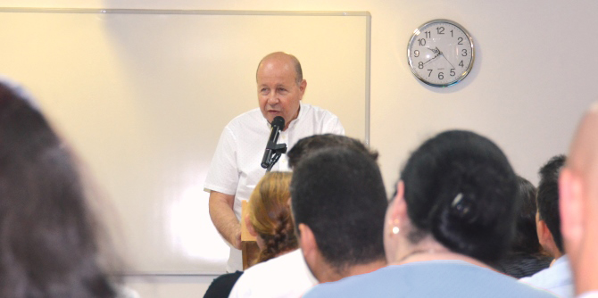

"אני חש התרגשות ושמחה לקראת ההתכנסות הבוקר, שפותחת את שנת הלימודים, ואני שמח לגלות בכל פעם מחדש את ההתרגשות הזו בי. התרגשות זו מהולה גם בעצב שבפרדה מחברנו ואיש הסגל הרב שמעון אדלר זכרונו לברכה, שלזכרו נקיים ערב פרדה בסיומו של יום זה", אמר דני בר גיורא, מנהל בית ספר מנדל למנהיגות חינוכית, בדברי הברכה לעמיתים החדשים והוותיקים.
בסיום דבריו הודה דני למשה ויגדור, נשיא קרן מנדל-ישראל, ליהודה ריינהרץ, נשיא הקרן, ולמורטון מנדל, יו"ר הקרן, על תרומתם ותמיכתם הרבה בבית הספר.
"אדם צריך אומץ לעשות את האי-אפשר", אמר משה ויגדור בצטטו את א.ד. גורדון. "אני מאחל גם לכם, עמיתים יקרים, שתמצאו את האומץ האישי והציבורי לעשות את האי-אפשר."

שנת הלימודים נפתחה עם הרצאה מפי ד"ר מאיר בוזגלו, חבר הוועדה האקדמית המייעצת של מכון מנדל למנהיגות ומרצה בכיר לפילוסופיה באוניברסיטה העברית. בוזגלו דיבר עם העמיתים על תכונות היסוד הרצויות של המנהיג על-פי תפיסתו: יכולת לשינוי מחשבתי, תוך בירור רעיוני בלתי פוסק ותהליך רצוף של ליבון וחידוד תפיסות עולמו; יצירת מציאות של עצמאות– כלכלית ומחשבתית, יכולת לרסן את הצורך העצמי בקבלת הכרה מסביבתו, ויכולת להסתפק בהישג אשר לשמו הוא פועל בעולם.
לבית ספר מנדל למנהיגות חינוכית מתקבלים מדי שנה כעשרים עמיתים ועמיתות בעלי יכולת ניהולית, כישורים אינטלקטואליים גבוהים ומחויבות להוביל שינוי למען שיפור המציאות החברתית והחינוכית בישראל. הלימודים בבית הספר, מיזם משותף לקרן מנדל ולמשרד החינוך, נמשכים שנתיים ובמהלכם העמיתים מפתחים את חזונם האישי והמקצועי תוך העמקת והרחבת הידע המקצועי שלהם ותרגומו לתוכנית פעולה בת-קיימא לתרומה בשדה החינוך בישראל.
{kind=link}
{kind=link}